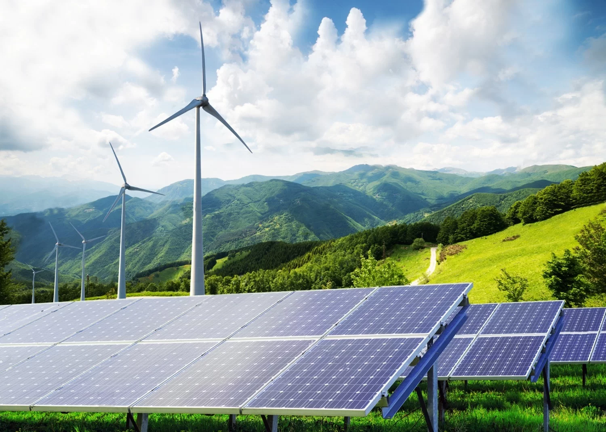
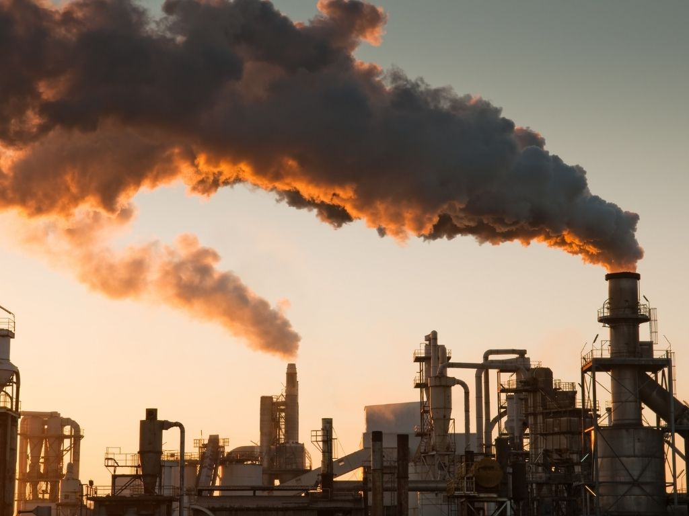
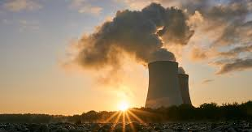
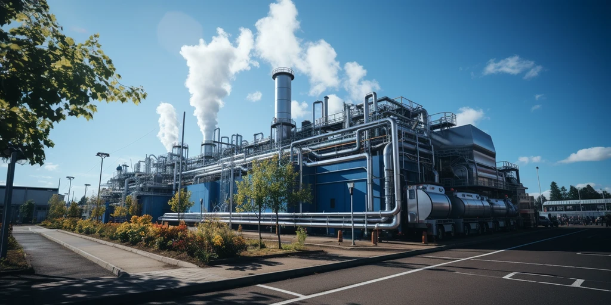

Renewable Energy
Overview: Renewable energy comes from sources that are naturally replenished, such as sunlight, wind, rain, and geothermal heat. These sources are sustainable and have a much lower environmental impact compared to fossil fuels.
Importance: Renewable energy plays a crucial role in reducing carbon emissions, combating climate change, and providing a sustainable energy future for the world. It is essential for reducing dependency on fossil fuels and increasing energy security.
Wind power, solar energy, and hydropower are the most commonly used renewable energy sources, helping to power homes, industries, and transportation systems globally.
Conservation Methods:
- Invest in renewable energy infrastructure like solar panels and wind turbines.
- Increase the efficiency of energy storage systems to better manage supply and demand.
- Encourage government policies that support renewable energy adoption and innovation.
- Promote public awareness about the benefits of renewable energy.
- Support research into new renewable technologies and energy efficiency practices.
Fossil Fuels
Overview: Fossil fuels are non-renewable energy resources that include coal, oil, and natural gas. They are formed from the remains of ancient plants and animals and are primarily used for electricity generation, heating, and transportation.
Importance: Fossil fuels have been the primary source of energy for centuries and power most of the world’s industries, transportation, and electricity. However, their extraction and use are major contributors to greenhouse gas emissions and environmental degradation.
Efforts to transition to cleaner energy alternatives are essential to mitigate the negative impacts of fossil fuel consumption, such as air pollution and global warming.
Conservation Methods:
- Reduce reliance on fossil fuels by increasing efficiency and transitioning to cleaner alternatives.
- Support carbon capture and storage technologies to reduce emissions.
- Encourage the use of electric vehicles and public transportation to reduce fossil fuel consumption.
- Promote energy-efficient appliances and buildings to reduce overall energy demand.
- Implement policies to limit fossil fuel exploration and production in ecologically sensitive areas.
Nuclear Energy
Overview: Nuclear energy is produced through the process of nuclear fission, where atoms of radioactive elements like uranium are split to release energy. This energy is used to generate electricity in nuclear power plants.
Importance: Nuclear energy is a low-carbon source of electricity, playing a role in reducing greenhouse gas emissions. It is highly efficient and provides a significant amount of power, especially in countries with high energy demands.
Despite its efficiency, nuclear energy poses risks related to radioactive waste, safety concerns, and the potential for accidents. Public perception and environmental concerns are important considerations when expanding nuclear energy.
Conservation Methods:
- Improve the safety and security of nuclear plants to prevent accidents.
- Invest in advanced nuclear technologies like fusion energy, which may offer even cleaner energy.
- Promote recycling of nuclear waste and find sustainable disposal solutions.
- Research better ways to store nuclear waste to protect future generations.
- Ensure proper regulation of the nuclear energy sector to minimize environmental and health risks.
Geothermal Energy
Overview: Geothermal energy is derived from the Earth's internal heat, which is used to generate electricity and provide heating. It is harnessed by tapping into hot springs, geysers, and underground reservoirs of steam and hot water.
Importance: Geothermal energy is a sustainable and environmentally friendly energy source. It provides a stable and reliable energy supply with minimal environmental impact, especially when compared to fossil fuels.
Geothermal energy can provide continuous, base-load power and is an important part of the renewable energy mix in regions with high geothermal potential.
Conservation Methods:
- Encourage investments in geothermal power plants and heating systems.
- Promote the exploration of new geothermal resources to expand capacity.
- Support geothermal heat pumps for residential and commercial heating applications.
- Manage geothermal reservoirs responsibly to prevent resource depletion.
- Implement policies that support sustainable geothermal energy production.